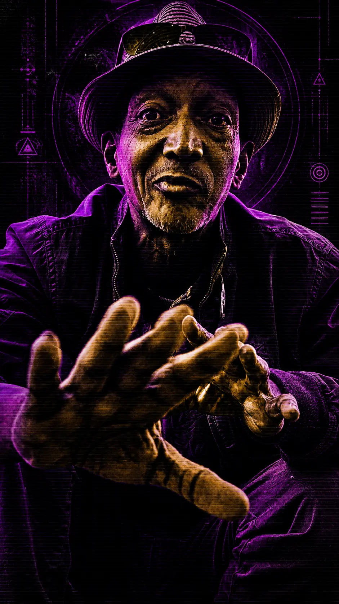
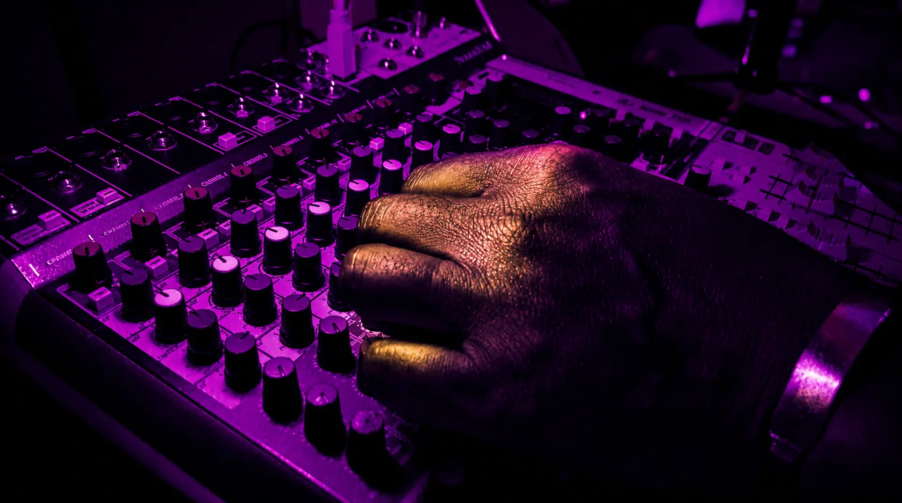

La fureur afro-caribéenne filtrée par une architecture électronique européenne radicale. Ragga × Afrobeat × Power Soca × melodic techno & afro house. Afro-Caribbean fury filtered through a radical European electronic architecture. Ragga × Afrobeat × Power Soca × melodic techno & afro house. Afro-Caribische furie gefilterd door een radicale Europese elektronische architectuur. Ragga × Afrobeat × Power Soca × melodic techno & afro house.

La Scission
Thermique
The Thermal Split
De Thermische Scheuring
CHAOS UNIT est une collision brutale entre l'électronique organique du melodic techno et de l'afro house — nappes chaudes, basses profondes — et la fureur incandescente du Power Soca, du Ragga et de l'Afrobeat. Un Chaos Organisé où la puissance des rythmes afro-caribéens est filtrée par une architecture électronique européenne radicale. CHAOS UNIT is a brutal collision between the organic electronics of melodic techno and afro house — warm layers, deep bass — and the incandescent fury of Power Soca, Ragga and Afrobeat. Organized Chaos where the power of afro-Caribbean rhythms is filtered through radical European electronic architecture. CHAOS UNIT is een brutale botsing tussen de organische elektronica van melodic techno en afro house — warme lagen, diepe bas — en de gloeiende furie van Power Soca, Ragga en Afrobeat. Georganiseerde Chaos waarbij de kracht van afro-Caribische ritmes wordt gefilterd door een radicale Europese elektronische architectuur.
Né d'une urgence de faire exploser les frontières du son, CHAOS UNIT est la seule réponse possible à l'uniformisation du monde : une transe afrofuturiste électronique. La collision Anvers–Bruxelles–Caraïbes. Born from an urgency to blow open the boundaries of sound, CHAOS UNIT is the only possible answer to a homogenized world: an electronic afrofuturist trance. The Antwerp–Brussels–Caribbean collision. Geboren uit een urgentie om de grenzen van het geluid op te blazen, is CHAOS UNIT het enige mogelijke antwoord op de uniformisering van de wereld: een elektronische afrofuturistische trance. De Antwerpen–Brussel–Caribische botsing.
Des basses organiques, profondes et chaleureuses qui forcent le mouvement instinctif. L'ancrage afro-caribéen — le ventre du son. Organic, deep, warm bass that forces instinctive movement. The afro-Caribbean anchor — the gut of the sound. Organische, diepe, warme bas die instinctieve beweging afdwingt. Het afro-Caribische anker — de buik van het geluid.
Des nappes de synthétiseurs organiques et chaudes — melodic techno et afro house — traitées par des effets Dub pour créer une tension spatiale profonde et enveloppante. Organic, warm synthesizer layers — melodic techno and afro house — processed through Dub effects to create a deep, enveloping spatial tension. Organische, warme synthesizerlagen — melodic techno en afro house — verwerkt door Dub-effecten om een diepe, omhullende ruimtelijke spanning te creëren.
Métis belgo-congolais, il porte les deux rives de l'Atlantique avant même d'avoir choisi sa musique. Enfant en Flandre, il grandit au son des disques de sa grande sœur — Earth Wind & Fire, Sun Ra, James Brown. Adolescent, trois ans au Zaïre le plongent dans la rumba congolaise, les rythmes d'Afrique de l'Ouest et du Sud : la musique africaine, de l'intérieur. À 18 ans, Bruxelles lui révèle la violence du hard-rock et l'irrévérence du punk — deux énergies qui ne le quitteront plus. Quand Bob Marley et Fela surgissent avec leurs discours panafricanistes, il retrouve ses racines et découvre la vivacité des sound systems. CHAOS UNIT est l'aboutissement de ce trajet : relier la force des rythmes africains à l'énergie désobéissante de certaines musiques occidentales. Sur scène, armure textile radicale, rigueur immobile. Il ne lance pas des morceaux — il transforme, déconstruit et performe la musique en direct via sets hybrides live/effets. Half Belgian, half Congolese, he carries both shores of the Atlantic before ever choosing his music. Growing up in Flanders, he was raised on his older sister's records — Earth Wind & Fire, Sun Ra, James Brown. As a teenager, three years in Zaire immersed him in Congolese rumba, West and South African rhythms: African music, from the inside. At 18, Brussels revealed the violence of hard rock and the irreverence of punk — two energies that never left him. When Bob Marley and Fela appeared with their pan-Africanist discourse, he returned to his roots and discovered the vitality of sound systems. CHAOS UNIT is the culmination of that journey: connecting the power of African rhythms with the disobedient energy of certain Western music. On stage: radical textile armor, motionless rigor. He doesn't play tracks — he transforms, deconstructs and performs music live through hybrid live/effects sets. Half Belgisch, half Congolees, hij draagt beide oevers van de Atlantische Oceaan al mee voor hij ooit zijn muziek heeft gekozen. Opgegroeid in Vlaanderen, groot geworden op de platen van zijn oudere zus — Earth Wind & Fire, Sun Ra, James Brown. Als tiener bracht hij drie jaar door in Zaïre en dompelde zich onder in de Congolese rumba, de ritmes van West- en Zuid-Afrika: Afrikaanse muziek, van binnenuit. Op zijn 18e onthulde Brussel hem het geweld van hard rock en de oneerbiedigheid van punk — twee energieën die hem nooit meer loslieten. Toen Bob Marley en Fela verschenen met hun pan-Afrikaans discours, keerde hij terug naar zijn roots en ontdekte de levendigheid van sound systems. CHAOS UNIT is het resultaat van die reis: de kracht van Afrikaanse ritmes verbinden met de ongehoorzame energie van bepaalde westerse muziek. Op het podium: radicaal textiel pantser, roerloze strengheid. Hij lanceert geen nummers — hij transformeert, deconstrueert en performt muziek live via hybride live/effecten sets.
Ses racines sont à Londres et Birmingham, dans la communauté jamaïcaine — à une époque où il était l'un des rares Blancs acceptés dans ces cercles, non pas seulement pour la musique, mais parce qu'il s'intéressait à la culture dans son ensemble. C'est là que s'est forgée sa formation profonde : la musique afro-caribéenne, de l'intérieur. La house music, il la découvrira plus tard, en fréquentant le Café d'Anvers à Anvers — en spectateur fasciné, jamais en acteur. CHAOS UNIT est la synthèse de ces deux mondes : les rythmes du Sud superposés à l'électronique du Nord, avec des instruments vintages et des samples comme épices. Comme un chef cuisinier qui assemble des ingrédients de plusieurs continents — pour créer des saveurs qui n'existaient pas encore, et qui sont appréciées tant au sud qu'au nord. His roots are in London and Birmingham, in the Jamaican community — at a time when he was one of the few white people accepted in those circles, not only for the music, but because he was genuinely interested in the culture as a whole. That is where his deep formation was forged: afro-Caribbean music, from the inside. House music he would discover later, as a regular at Café d'Anvers in Antwerp — a fascinated observer, never a participant. CHAOS UNIT is the synthesis of these two worlds: the rhythms of the South layered over the electronics of the North, with vintage instruments and samples as spices. Like a chef assembling ingredients from several continents — to create flavours that didn't yet exist, appreciated both in the South and in the North. Zijn wortels liggen in Londen en Birmingham, in de Jamaicaanse gemeenschap — in een tijd dat hij een van de weinige blanken was die er werd aanvaard, niet alleen omwille van de muziek, maar omdat hij zich ook breder interesseerde voor de cultuur als geheel. Daar werd zijn diepe vorming gesmeed: de afro-Caribische muziek, van binnenuit. De house muziek ontdekte hij later, als vaste bezoeker van dancing Café d'Anvers in Antwerpen — als gefascineerde toeschouwer, nooit als acteur. CHAOS UNIT is de synthese van die twee werelden: de ritmes van het Zuiden over de elektronica van het Noorden, met vintage instrumenten en samples als specerijen. Als een kok die ingrediënten van verschillende continenten samenbrengt — om smaken te creëren die nog niet bestonden, en die zowel in het Zuiden als in het Noorden worden gewaardeerd.

L'aboyeur. Voix perforante, gestion de la fureur et de l'énergie de foule. Discipline scénique absolue. The barker. Piercing voice, managing crowd fury and energy. Absolute stage discipline. De schreeuwer. Doordringende stem, beheer van woede en energie van de menigte.
L'expert technique. Des flows millimétrés insérés comme des pièces mécaniques dans la rythmique. The technical expert. Precision flows inserted like mechanical parts into the rhythm. De technische expert. Nauwkeurige flows als mechanische onderdelen in het ritme.
L'ancrage sombre. Résonance Dub, dimension sacrée. La gravité qui donne du sens au chaos ambiant. The dark anchor. Dub resonance, sacred dimension. The gravity that gives meaning to the surrounding chaos. Het donkere anker. Dub-resonantie, heilige dimensie. De zwaartekracht die betekenis geeft aan de chaos.
Le show ne s'offre pas à regarder. Il s'impose à subir. L'ombre est l'espace dramaturgique principal.The show isn't for watching. It's for enduring. Shadow is the primary dramaturgical space.De show is niet om naar te kijken. Hij is om te ondergaan. Schaduw is de primaire dramaturgische ruimte.
Faisceaux blancs froids et stroboscopiques uniquement. Esthétique robotique et saccadée. Aucune couleur chaude.Cold white stroboscopic beams only. Robotic, jerky aesthetic. No warm colors.Alleen koude witte stroboscopische stralen. Robotachtige, schokkerige esthetiek. Geen warme kleuren.
Les ruptures brutales et le silence weaponisé rendent l'expérience incomparable. Le public ne regarde pas un concert — il subit un événement climatique.Brutal breaks and weaponized silence make the experience unmatched. The audience doesn't watch a concert — they endure a weather event.Brutale breuken en bewapende stilte maken de ervaring ongeëvenaard. Het publiek ondergaat een weerevenement.
Vizion ne lance pas des morceaux. Il transforme, déconstruit et reconstruit la musique en temps réel — stems, chaînes d'effets, contrôleurs. Chaque set est une performance unique, irréproductible.Vizion doesn't play tracks. He transforms, deconstructs and reconstructs music in real time — stems, effects chains, controllers. Each set is a unique, unrepeatable performance.Vizion lanceert geen nummers. Hij transformeert, deconstrueert en reconstrueert muziek in realtime — stems, effectenketens, controllers. Elke set is een unieke, onherhaalbare performance.
Voix perforante. Capacité à porter la fureur d'une foule. Discipline scénique absolue — l'esthétique du projet n'est pas négociable. Univers Soca, Ragga ou démarche hybride assumée. Piercing voice. Ability to carry crowd fury. Absolute stage discipline — the project's aesthetic is non-negotiable. Soca, Ragga or assumed hybrid approach. Doordringende stem. Capaciteit om de woede van een menigte te dragen. Absolute podiumdiscipline — de esthetiek is niet onderhandelbaar.
Flows millimétrés, technique irréprochable. Capacité à s'insérer comme une pièce mécanique dans une rythmique électronique froide et précise. L'exactitude avant la démonstration. Precision flows, flawless technique. Ability to fit like a mechanical part into a cold, precise electronic rhythm. Exactness before showmanship. Nauwkeurige flows, onberispelijke techniek. Als een mechanisch onderdeel in het koude, precieze elektronische ritme passen.
Voix grave, résonance Dub, présence sacrée. Il donne au chaos son sens et sa profondeur. Ancrage roots, soul ou spirituel. La gravité qui fait tenir l'ensemble. Deep voice, Dub resonance, sacred presence. He gives chaos its meaning and depth. Roots, soul or spiritual grounding. The gravity that holds it all. Diepe stem, Dub-resonantie, heilige aanwezigheid. Roots, soul of spirituele verankering. De zwaartekracht die alles bijeenhoudt.
2 à 4 Meneuses de Transe. Elles matérialisent les fréquences froides par des mouvements robotiques et activent la foule par une énergie physique impérieuse. Le casting exige la maîtrise du contraste : mouvements mécaniques précis (Melodic Techno) et activation sauvage (Soca). Look "Cyber-Afro-Caribéen" — esthétique radicale, pas de compromis. 2 to 4 Trance Leaders. They materialize cold frequencies through robotic movements and activate the crowd with imperious physical energy. Mastery of contrast required: precise mechanical movements (Melodic Techno) and wild activation (Soca). "Cyber-Afro-Caribbean" look — radical aesthetic, no compromise. 2 tot 4 Trance-leiders. Ze materialiseren koude frequenties door robotbewegingen en activeren de menigte. Beheersing van contrast vereist: precieze mechanische bewegingen (Melodic Techno) en wilde activering (Soca). Radicale esthetiek, geen compromis.
Envoyez vos références et liens. Nous répondons à toutes les candidatures sérieuses. Send your references and links. We respond to all serious applications. Stuur uw referenties en links. We reageren op alle serieuze kandidaturen.